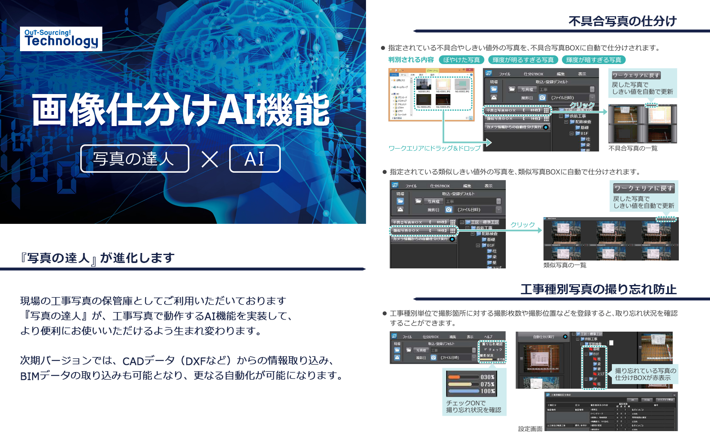
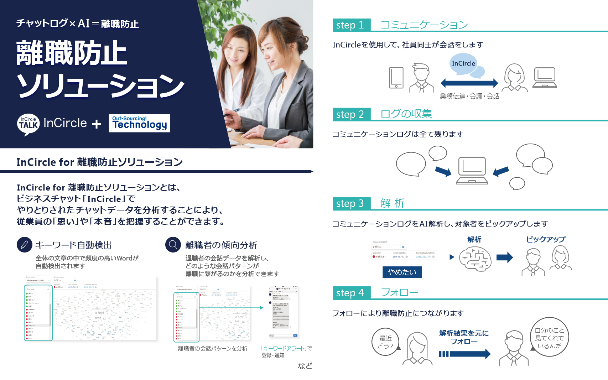

<!DOCTYPE html>
<!--母国語宣言-->
<html lang="ja">
	<head>
		<meta name="viewport" content="width=device-width, initial-scale=1, minimum-scale=1, maximum-scale=1, user-scalable=no">
	  <meta http-equiv="Content-Type" content="text/html; charset=UTF-8"><!-- <meta charset="UTF-8"> -->
	  <meta http-equiv="Content-Script-Type" content="text/javascript"><!--スクリプト言語設定-->
	  <meta http-equiv="Content-Style-Type" content="text/css"><!--スタイルシート言語設定-->
		<!-- qimessaging読込 -->
		<script src="/libs/qimessaging/1.0/jquery.min.js" type="text/javascript"></script>
	  <script src="/libs/qimessaging/1.0/qimessaging.js" type="text/javascript"></script>
		<!-- localファイル参照 -->
		<script type="text/javascript" src="js/qi_helper.js"></script>
	  <script type="text/javascript" src="js/script.js"></script>
	  <link rel="stylesheet" href="css/style.css" type="text/css">
		<link rel="stylesheet" href="css/checkbox.css" type="text/css">

		<title></title>
		<script>
		// 画像プリロード
      $('');
      $('');
      $('');
      $('');
			$('');
		</script>
	</head>

	<body>
		<div class="image_table">
			
			
		</div>
	</body>

</html>
